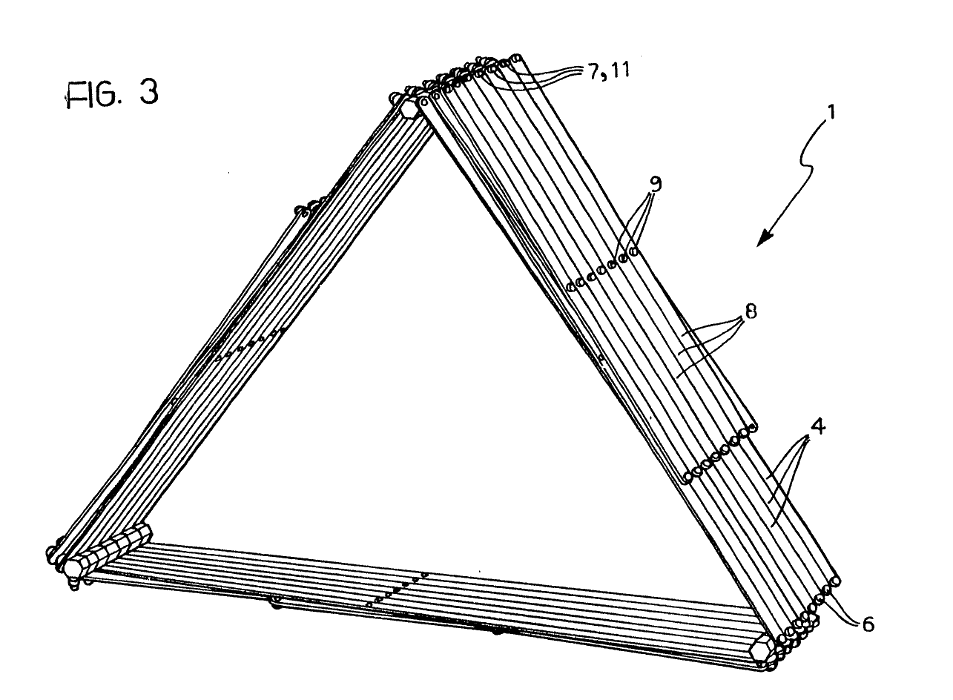

Saison 13-14
Et si…
What if …
Wat als…
INVOLUTION 03 / l’art des possibles
ÉDITO avant qu’il ne soit trop tard
Et si de petits pouvoirs impliquaient de grandes responsabilités ? Et si les poules avaient des dents, les traiterions-nous autrement?
Et si nous devenions les héros de notre super-vie? Et si en se sortant la tête de l’eau, on parvenait à respirer ? Et si on arrêtait de se mettre sous pression ? Et si on passait à l’action, man and woman ? Et si l’alternatif devenait une norme et la norme une alternative ? Et si c’était possible ? Et si au lieu de vouloir rencontrer toujours le troisième type, on commençait par le premier ? Et si les extraterrestres c’étaient simplement nous, le Nous du futur communiquant au Nous du passé ?
Bricolons de l’espace pour l’humain, et le temps qui va avec, le temps X des frères Bogdanoff par exemple.
L’art des possibles, c’est considérer nos imaginaires et nos histoires comme les fondations réelles et concrètes de toutes les vies parallèles qui s’offrent à nous. « Et si tu n’existais pas, dis-moi pourquoi j’existerais ? » Et oui, si vous n’existiez pas, pourquoi les théâtres existeraient ? Vous connaissez la chanson, un spectacle sans spectateurs, c’est un peu comme une politique culturelle sans vision, comme le berger sans ses moutons, comme l’Histoire sans sa genèse, …
Et si la Balsamine se réinventait pour vous, chaque saison ? 2013-2014, c’est la Balsa au pays de l’uchronie, au sens le plus strict, celui de l’altération.
Un exemple ?
Et si Martine Wijckaert (fondatrice de la Balsamine) n’était pas entrée dans cette friche, dans cette caserne à l’abandon? Et si elle n’avait pas, avec ses petits bassinets, recueilli les fuites de ce lieu abandonné ? Et si elle n’avait pas décidé de rester dans ce lieu comme dans une seconde maison ? Et si le dictionnaire, avec lequel elle recherchait le nom du lieu, en tombant sur le sol ne s’était pas ouvert à la lettre B, sur la page répertoriant cette fleur sauvage, la balsamine, où en serions-nous aujourd’hui ?
Quelle serait l’Histoire de ce temps qui n’existe pas ? Une autre question nous brûle les lèvres : et si le bras de Martine Wijckaert avait été plus long, comme celui d’un des 4 fantastiques, combien d’autres portes aurait-elle pu ouvrir sur son imaginarium ? Tout ceci confine à l’émerveillement.
Martine Wijckaert est aujourd’hui artiste associée, artiste indissociable de notre présence en ses murs. Et si sa prochaine création « Trilogie de l’enfer » était le spectacle incontournable ? Alors pourquoi se priver de cette réalité si belle? Les créations susceptibles de changer le regard ne sont finalement pas aussi nombreuses qu’on pourrait croire ! En soi, la Balsa est un non-lieu de non-temps où le public comme l’artiste sont dépositaires du sens et du rythme de l’œuvre. Et si l’expérience esthétique était à portée de tous ?
Enfin, et pour finir avec toutes ces suppositions, imaginons seulement que cette nouvelle saison théâtrale à effet papillon, ce grand spectacle de variétés contemporaines, soit le départ d’une aventure commune, où le plaisir passe par la découverte de ces multivers artistiques.
Il est temps de commencer la lecture de ce programme qui, nous l’espérons, vous uppercutera :
Bam Boum Wizz Pimmmm
Fabien Dehasseler et Monica Gomes, codirecteurs artistiques